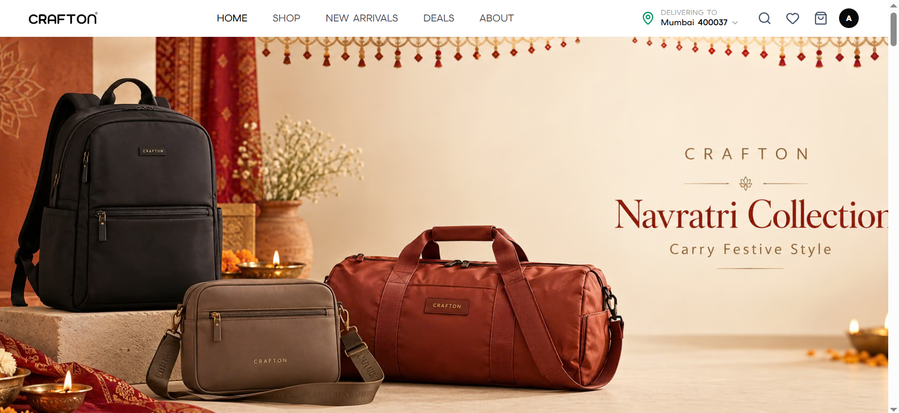
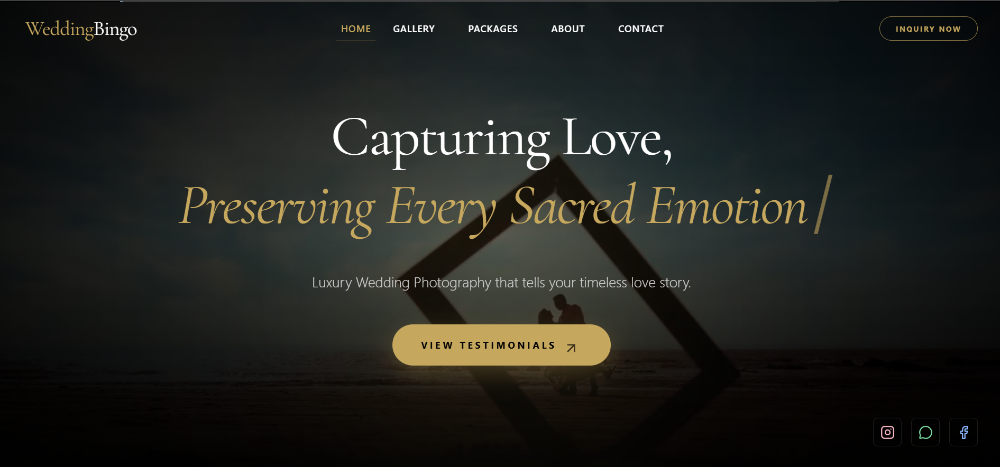
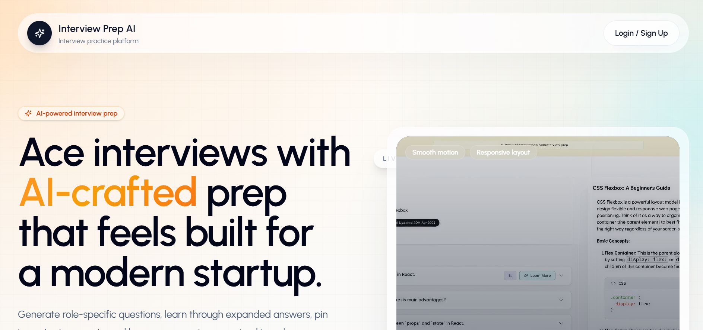
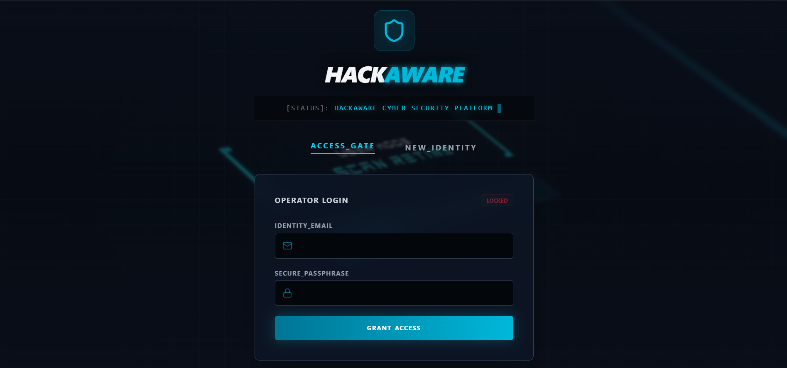
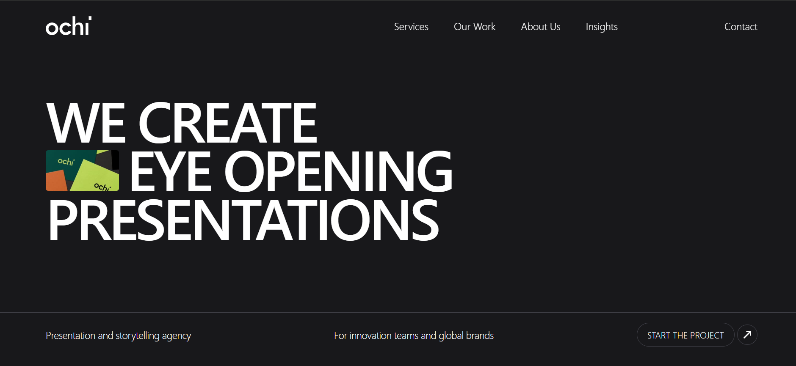

Client · Live
Client · Live
Client · LiveGesture-controlled AI app with real-time hand tracking, an air-drawing canvas and live emotion detection using OpenCV and MediaPipe.

MERN
CybersecurityInteractive cybersecurity demonstration and prevention platform for educational threat awareness and mitigation strategies.

UI / Animation